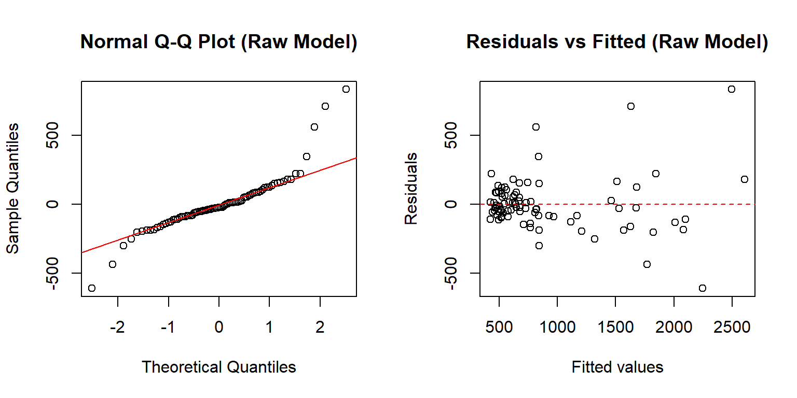
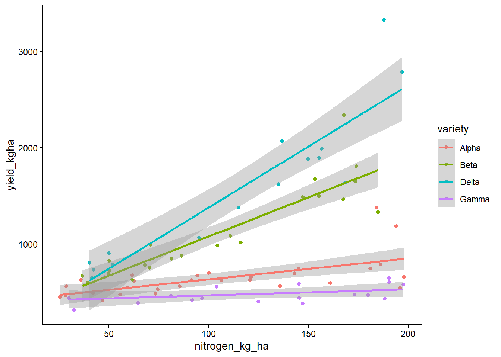
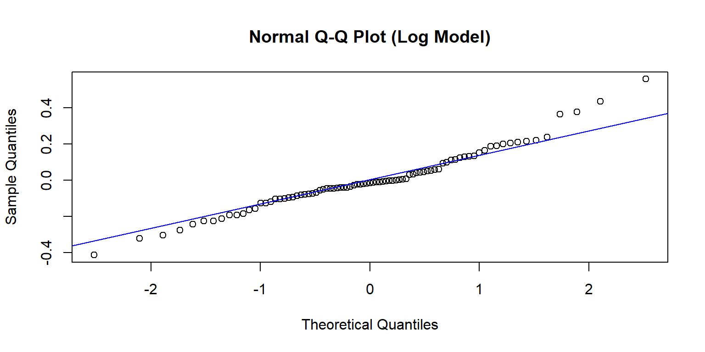
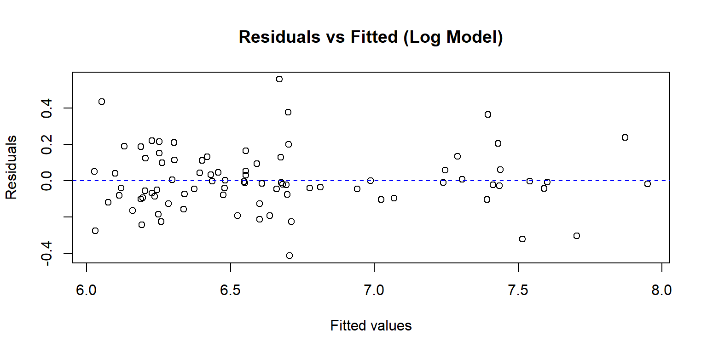
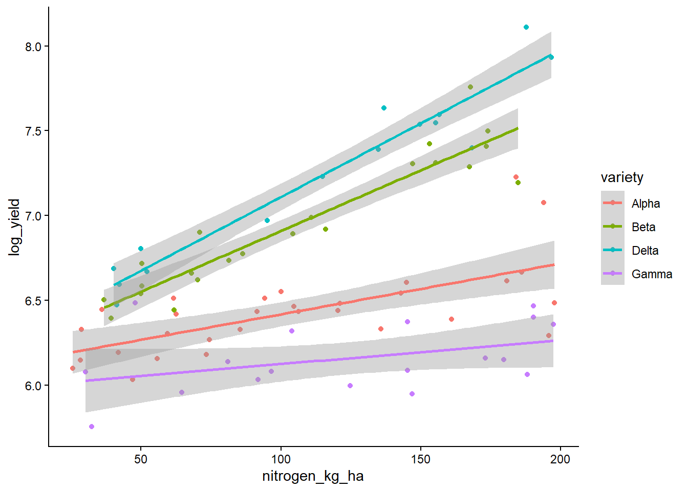

Assumption Checking, Transformations & Intro to GLMs
Author
PLSC/ANSC/SNR 571
For this you will need the car package and the ggplot2 package
Overview
This in-class coding activity has three sections. All code is provided: your job is to run the code, look at the output, and answer the discussion questions on Canvas.
You will not write any code today. Read the prompts, run each chunk in order, and submit your answers through Canvas.
Section 1. Assumption Checking (~7 min)
We will work with a crop-yield dataset. Four wheat varieties (Alpha, Beta, Gamma, Delta) were grown at different nitrogen application rates. The response variable is yield (kg/ha).
Load the data and fit a linear model
# Read the yield datasetyield_data <-read.csv("yield_transform_dataset.csv")# Make variety a factoryield_data$variety <-as.factor(yield_data$variety)# Quick look at the datastr(yield_data)
# Side-by-side diagnostic plotspar(mfrow =c(1, 2))# QQ plot — checks normality of residualsqqnorm(resid(raw_model), main ="Normal Q-Q Plot (Raw Model)")qqline(resid(raw_model), col ="red")# Residuals vs Fitted — checks linearity & constant varianceplot(fitted(raw_model), resid(raw_model),xlab ="Fitted values", ylab ="Residuals",main ="Residuals vs Fitted (Raw Model)")abline(h =0, col ="red", lty =2)

par(mfrow =c(1, 1))
Let’s also look at the model plot
library(ggplot2)ggplot(yield_data, aes(nitrogen_kg_ha, yield_kgha, col=variety)) +geom_point() +stat_smooth(method ="lm", formula = y ~ x)+theme_classic()

📋 Canvas Question (Section 1)
In 1–2 sentences: What assumption of the linear model is violated, and how can you tell from the diagnostic plots?
(Submit your answer on Canvas, do not write it here.)
🛑 Stop Point 1
Pause here: Discussion
Section 2: Transformation & Re-check (~8 min)
The residual-vs-fitted plot above likely showed a fan shape (variance increasing with the mean) and possibly some curvature. This is classic heteroscedasticity with multiplicative errors — exactly the situation where a log transformation helps.
Apply a log transformation and re-fit
# Log-transform the responseyield_data$log_yield <-log(yield_data$yield_kgha)# Re-fit the same model structure on log(yield)log_model <-lm(log_yield ~ nitrogen_kg_ha * variety, data = yield_data)summary(log_model)
par(mfrow =c(1, 1))qqnorm(resid(log_model), main ="Normal Q-Q Plot (Log Model)")qqline(resid(log_model), col ="blue")

plot(fitted(log_model), resid(log_model),xlab ="Fitted values", ylab ="Residuals",main ="Residuals vs Fitted (Log Model)")abline(h =0, col ="blue", lty =2)

Notice that the fan shape is reduced and the QQ plot is closer to the diagonal. The transformation is doing its job.
library(ggplot2)ggplot(yield_data, aes(nitrogen_kg_ha, log_yield, col=variety)) +geom_point() +stat_smooth(method ="lm", formula = y ~ x)+theme_classic()

ANOVA — Type I, Type II, and Type III
Because the design is unbalanced (different sample sizes per variety) and the model includes an interaction, the choice of sum-of-squares type matters. Below are all three. Your task: pick the correct one, delete or comment out the other two, and justify your choice on Canvas.
library(car)# ------ Type I (sequential) SS ------# Order of terms matters; results depend on which predictor is entered first.cat("===== Type I SS (sequential) =====\n")anova(log_model)# ------ Type II SS ------# Each main effect tested after the other main effect, ignoring the interaction.cat("\n===== Type II SS =====\n")Anova(log_model, type ="II")# ------ Type III SS ------# Each term tested after ALL other terms (including the interaction).# Requires setting contrasts to sum-to-zero for valid results.options(contrasts =c("contr.sum", "contr.poly"))log_model_t3 <-lm(log_yield ~ nitrogen_kg_ha * variety, data = yield_data)Anova(log_model_t3, type ="III")
📋 Canvas Questions (Section 2)
Which ANOVA type is most appropriate here, and why? (Hint: think about the study design: is it balanced? Is the interaction important?)
Is the interaction between nitrogen and variety statistically significant? Look at the ANOVA table you chose and report the p-value.
(Submit your answers on Canvas: do not write them here.)
We saw that the correct answer is ANOVA type 3
# ------ Type III SS ------# Each term tested after ALL other terms (including the interaction).# Requires setting contrasts to sum-to-zero for valid results.options(contrasts =c("contr.sum", "contr.poly"))log_model_t3 <-lm(log_yield ~ nitrogen_kg_ha * variety, data = yield_data)Anova(log_model_t3, type ="III")
Now we switch to a completely different dataset: seed sprouting. We recorded whether each seed sprouted (1) or not (0), along with the seed’s size in millimeters.
The question: Does seed size predict the probability of sprouting?
Load the sprouting data and fit a linear model
# Read the sprouting datasetsprout_data <-read.csv("seed_sprouting.csv")# Quick lookstr(sprout_data)table(sprout_data$sprout)
# Fit a LINEAR model to the binary outcome — this is intentionally wrong!wrong_model <-lm(sprout ~ seed_size_mm, data = sprout_data)summary(wrong_model)
Plot: predictions from the linear model
# Create a sequence of seed sizes for predictionnew_sizes <-data.frame(seed_size_mm =seq(0, 14, by =0.1))# Predict with 95% confidence intervalpreds <-predict(wrong_model, newdata = new_sizes, interval ="confidence")new_sizes <-cbind(new_sizes, preds)# Plot the observed data and the linear predictionsplot(sprout_data$seed_size_mm, sprout_data$sprout,pch =16, col =rgb(0, 0, 0, 0.4),xlab ="Seed Size (mm)", ylab ="Sprouted (0/1)",main ="Linear Model Predictions for Binary Outcome",ylim =c(-0.3, 1.5))# Add the fitted line and confidence bandlines(new_sizes$seed_size_mm, new_sizes$fit, col ="red", lwd =2)lines(new_sizes$seed_size_mm, new_sizes$lwr, col ="red", lty =2)lines(new_sizes$seed_size_mm, new_sizes$upr, col ="red", lty =2)# Reference lines at 0 and 1abline(h =0, col ="grey50", lty =3)abline(h =1, col ="grey50", lty =3)legend("topleft",legend =c("Observed", "Fitted (lm)", "95% CI"),pch =c(16, NA, NA), lty =c(NA, 1, 2), col =c("black", "red", "red"),bty ="n")
Diagnostics for the wrong model
par(mfrow =c(1, 2))qqnorm(resid(wrong_model), main ="Normal Q-Q Plot (Linear on 0/1)")qqline(resid(wrong_model), col ="red")plot(fitted(wrong_model), resid(wrong_model),xlab ="Fitted values", ylab ="Residuals",main ="Residuals vs Fitted (Linear on 0/1)")abline(h =0, col ="red", lty =2)
par(mfrow =c(1, 1))
Look at the residual plot: you should see two distinct bands of residuals (one for sprout = 0, one for sprout = 1). This is a hallmark of fitting a continuous model to binary data.
📋 Canvas Questions (Section 3)
What range do the fitted values fall in: is that a problem?(Look at the prediction plot. Do any predicted “probabilities” go below 0 or above 1?)
What does the residual plot look like — does it meet the assumptions of a linear model?(Describe what you see.)
What kind of model should we use instead, and why?
(Submit your answers on Canvas — do not write them here.)
🛑 Stop Point 3 — Wrap-up
Let’s talk:
Why lm() fails for binary outcomes
What a generalized linear model (GLM) is specifically logistic regression (glm() with family = binomial)
How the logit link function keeps predicted probabilities inside [0, 1]
Continue next week
GLM’s
Just as a reminder… We use GLM’s when the predictor and response variables DO NOT have an underlying normal distribution of the residuals or lack an underlying linear relationship.
In Linear Models we model the response as a function of the predictors.
In GLM, we model a function of the response as a function of the predictors. That function is called the link function. So, we are not modeling the response variable (usually “y”) but a link function of the response. So, instead of modeling:
\[
\hat{y} = \beta_0+\beta_1x_1
\]
(where \(\hat{y}\) represents the expected value of y) we model:
\[ logit(p) = \beta_0+\beta_1x_1 \]or
\[ log(\lambda) = \beta_0+\beta_1x_1 \]
We use logit for logistic regression (aka binomial distribution), and we use log for Poisson distributed data.
WarningThink about it 🧠
How to interpret the \(\beta's\)? 🤔
Everything to the right of the = sign is THE SAME. This means, the link function allows us to estimate link(y) as a linear model!
In the simple linear model the \(\beta_0\) is the expected (or predicted) value of y when x is 0. The \(\beta_1\) is how much y changes for a one unit increase in x. This is called the slope and it is very useful! it can tell us how strong the effect of x is on y (effect size). We can analyze whether this effect is biologically important. We can analyze whether it is significantly different from 0. All in all, the \(\beta's\) are super informative. And as the paper we read said, inference is about the \(\beta's\)!
What happens when we have generalized models? The \(\beta's\) represent effects NOT on the response variable, but on the link function of the variable. So \(\beta_1\) represents how much \(log(\lambda)\) changes for a one unit increase in x. But it doesn’t tell us how much \(\lambda\) changes. In order to figure this out, we need to do an inverse link equation:
\(\lambda = e^{\beta_0+\beta_1x_1}\)
For this reason is important to:
Know the link functions
Know the inverse link functions
Know these functions in R
Here is a table with the link functions for both Binomial and Poisson distributions.
Save it somewhere important!
Distribution
link name
link equation
inverse link eq
link function R
inverse link in R
Binomial
logit
\(\mu = log(\frac{p}{1-p})\)
\(p= \frac{e^\mu}{1+e^\mu}\)
qlogis()
plogis()
Poisson
log
\(\mu = log(\lambda)\)
\(\lambda = e^\mu\)
log()
exp()
Logistic Regression
We use the logistic regression when we have binomial data. Remember, in binomial data the response variable is binary, our responses are limited to 0’s and 1’s. Which is which depends on you, but usually 1 is seen as a “success” or “positive”.
Some examples:
Presence/absence
Alive/Dead
Homozygous/Heterozygous
Mature/non mature
Male/Female
pregnant / not pregnant
Healthy / Disease
WarningThink about it 🧠
What is the response variable? 🤔
We usually obtain the mean of the response variable. In the grasslandexample, the response variable was KgDMHA, or Kilograms of Dry Matter per Hectare.
In the logistic regression, we are trying to find the probability of an event happening. Look at the examples before this box. If the binary outcomes are pregnant or not pregnant, the response variable is the probability of being pregnant.
If we were exploring whether cortisol has an effect on succesful pregnancies in mice, and the model was glm(pregnancy~cortisol, data=data, family=binomial(link="logit") then, what we are trying to estimate are 1) whether cortisol has an effect on the probability of being pregnant (inference) and 2) what is the probability of a mouse being pregnant given a specific cortisol measurement. This explains why it is not linear. Probabilities go from 0 to 1.
The link equation is the “log of odds”, also known as logit. This equation allows us to move from a system were the values go from 0 to 1 (probability) to one where we can theoretically go from -INF to INF.
Log of odds? What is that? And what are odds?
The logit link function is: \(\mu = log(\frac{p}{1-p})\) or also known as “the log of odds”. This works because any probability can be converted to log odds by finding the odds and taking the log of that. James Jaccard calls log odds”counterintuitive and challenging to interpret”. They are not as easy to interpret as the “log” we use in Poisson. However, I don’t think you absolutely need to understand the transformation, you only need to understand why it is useful!
First off, the odds is \(\frac{p}{1-p}\). It is simply dividing the probability of an event occurring divided by the probability of it not occurring. Let’s look at some examples:
In a coin toss with 0.5 probability, the odds ratio is: \(\frac{0.5}{1-0.5} = 1\). We can interpret this as the odds of getting a success (or head) is 1:1 (think 1 to 1, or 50-50)
Let’s imagine the probability of getting a 5 after rolling one die. The probability of this event is \(\frac{1}{6}\), so, the odds are:
(1/6)/(5/6)
The odds are 0.2. This means you will see 0.2 successes for every failure (or one success for every 5 failures).
Finally, let’s think of the odds of me (Alejandro) seeing a car accident during my daily drive to and from campus). I know this is biased, and one semester I will actually sample this for an exercise, but my very biased estimate says the probability is 0.8 (80% chance of seeing one). If this was true, then the odds would be:
0.8/(1-0.8)
Four. Again, think of this as four to one. If I drove five times, I would see an accident 4 times, and “no accidents” one time.
OK, that was a lot of time spent on odds. And the reason I did that, is that my brain struggles thinking in odds rather than probabilities. Which is why we want to present the results in a probabilistic scale. However, this concept is important to understand how it is estimated.
Odds are always “positive”. But the transformation need to potentially be from -inf to inf. Similar to what we do with counts, then we take the log of the odds.
Let’s imagine the probability of winning the lottery is 0.000000000065789. Then, the log odds would be:
log(6.5789e-11/(1-6.5789e-11))
-23.44. And if we had an event with high odds (like the accident one):
log(0.8/(1-0.8))
Here you can see how values higher than 1 (p higher than 0.5) will be positive, and odds lower than 1 (p lower than 0.5) will be negative.
Actually, we can plot the relationship between p (probability) and logit(pi):
pi =seq(0.0001,1-0.0001, by=0.0001)plot(pi~qlogis(pi), type="l",xlab="logit(p)",ylab="p"); abline(v=0, lty="dashed"); abline(h=0.5, lty="dashed")
What I want you to take away from this whole section is the following:
TipTake home message 🏠
1- logit(p) ranges from -Inf to +Inf as pi increases from 0 to 1 Take home message
2- logit(p) takes on a full range of values which allow the modeling algorithm to explore a full range of coefficient values in the systematic component of the model In other words, \(\beta_0 + \beta_1x_1 + \beta_2x_2 + ... + \beta_mx_m\) can be unconstrained and can take values from -Inf to + Inf
3- logit(p) is qlogis(p) in r
Right model
Let’s run the right model for the seed sprouting data:
logistic_model <-glm(sprout ~ seed_size_mm, data = sprout_data, family =binomial(link ="logit"))summary(logistic_model)
And lets plot the predictions. We will use predict and the inverse link function to get the predicted probabilities. Remember plogis() is the inverse link function for the logit link.
# Create a sequence of seed sizes for prediction# Predict with 95% confidence interval on the link scale# I will use the same dataframepreds <-predict.glm(logistic_model, sprout_data, se.fit =TRUE)# Calculate the confidence intervals on the link scaleci_lwr <-with(preds, plogis(fit -1.96* se.fit))ci_upr <-with(preds, plogis(fit +1.96* se.fit))# Add the predicted probabilities and confidence intervals to the original data framesprout_data<-cbind(sprout_data,preds)sprout_data$predicted_prob <-plogis(sprout_data$fit)sprout_data$ci_lwr <- ci_lwrsprout_data$ci_upr <- ci_upr
ggplot(sprout_data,aes(x=seed_size_mm,y=predicted_prob,ymin=ci_lwr,ymax=ci_upr))+geom_point()+geom_line(aes(y=predicted_prob))+geom_ribbon(alpha=0.15)+xlab("Seed Size (mm)")+ylab("Probability of Sprouting")+theme_bw()
That is it! On Wednesday and Friday we will talk about Poisson!